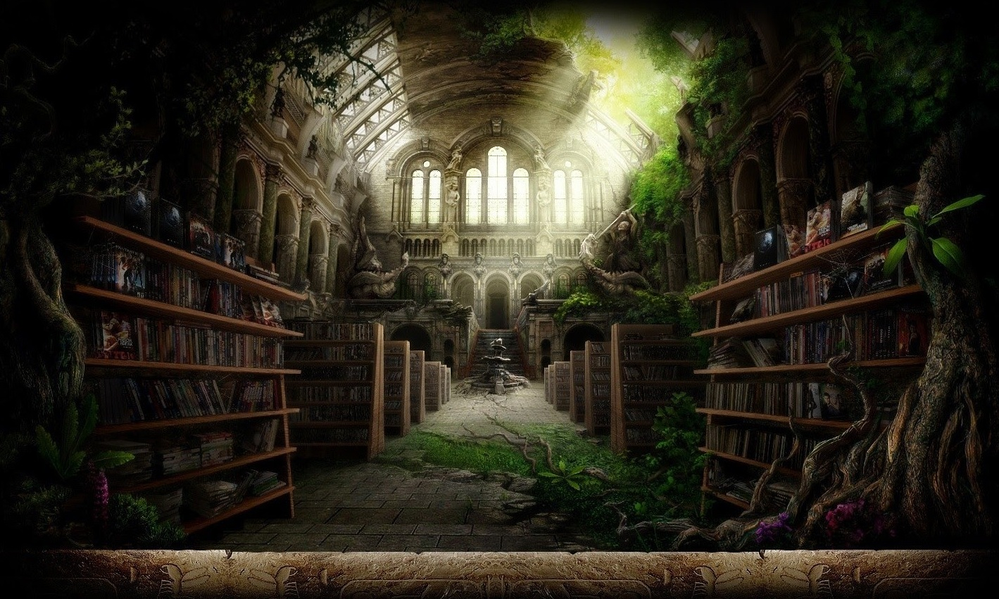

Entras en lo que parece ser una biblioteca en ruinas, aunque por fuera parece estar en buen estado.
Está llena de arbustos y ramas y en alguna parte oyes el murmuro de una voz leyendo algo en un idioma extraño.
¿Qué vas a hacer?
Buscas el origen de las voces
Sales corriendo hacia la taberna
